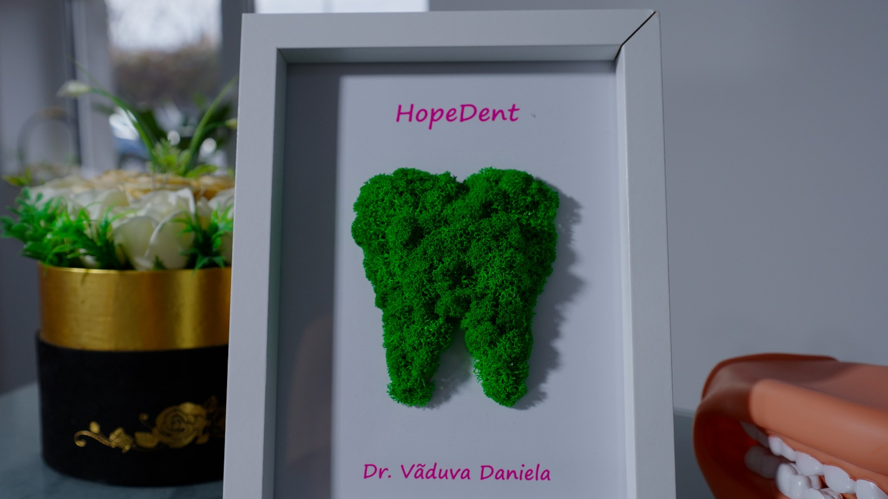
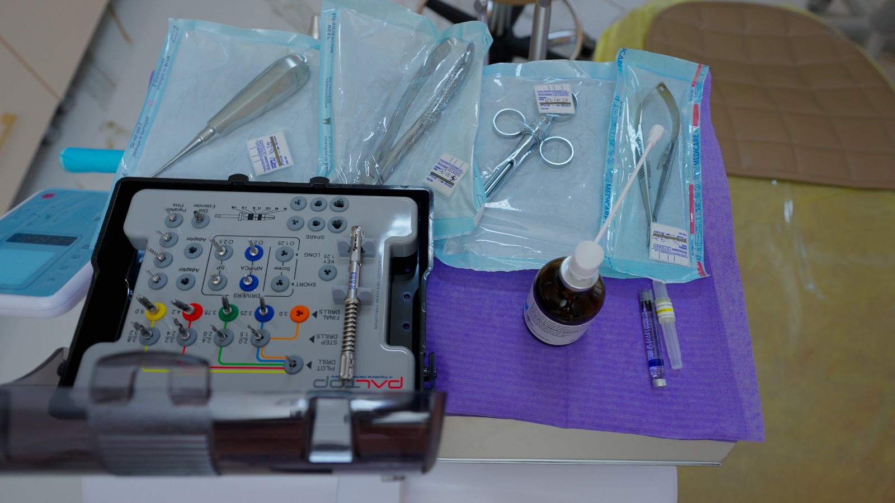
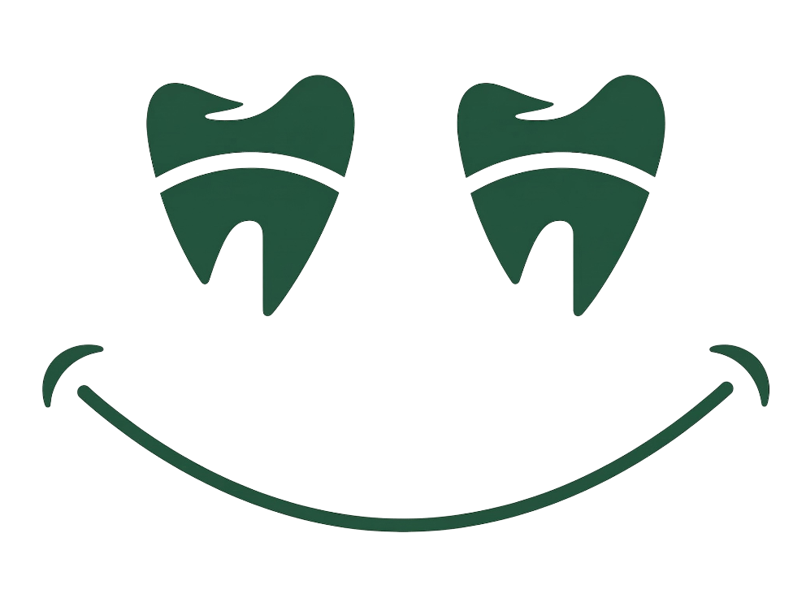

Laserul stomatologic: Tehnologie modernă pentru sănătatea zâmbetului tău
05 mai 2026
O introducere în utilizarea laserului stomatologic și beneficiile pe care le poate aduce în anumite tratamente dentare.
În blogul HopeDent găsești articole și resurse despre îngrijirea orală, prevenție, tratamente stomatologice și pași utili înainte de vizita la dentist.

Un pacient informat ia decizii mai ușor și parcurge tratamentul cu mai multă încredere. Articolele noastre sunt gândite pentru a explica pe scurt subiecte importante din stomatologie, într-un limbaj clar și accesibil.
Informațiile din blog nu înlocuiesc consultația medicală, dar pot ajuta pacienții să înțeleagă mai bine când este momentul să ceară ajutorul unui medic dentist.
05 mai 2026
Laserul stomatologic este una dintre tehnologiile moderne folosite în stomatologie pentru tratamente mai precise și o experiență mai confortabilă pentru pacient. Află pe scurt cum poate ajuta această tehnologie și în ce situații poate fi recomandată.

Descoperă resurse scurte și clare despre prevenție, tratamente și îngrijirea zâmbetului.

05 mai 2026
O introducere în utilizarea laserului stomatologic și beneficiile pe care le poate aduce în anumite tratamente dentare.
05 mai 2026
Un ghid simplu despre importanța controalelor periodice și despre semnele care arată că este bine să mergi la dentist.
05 mai 2026
Recomandări utile pentru părinți, astfel încât prima experiență a copilului la dentist să fie mai calmă și mai prietenoasă.
05 mai 2026
O explicație clară despre rolul igienizării profesionale și despre cum ajută la menținerea sănătății orale.
05 mai 2026
Semnele care pot indica nevoia unui consult ortodontic și de ce evaluarea timpurie poate fi importantă.
05 mai 2026
Informații utile despre situațiile în care durerea dentară nu trebuie amânată și este nevoie de evaluare medicală.
Articolele HopeDent au rol informativ și nu înlocuiesc evaluarea realizată de un medic dentist. Pentru recomandări adaptate situației tale, programează o consultație în clinică.